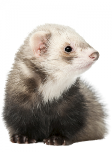
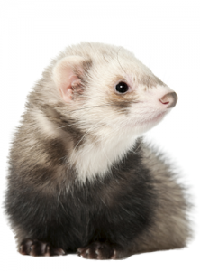

Wij zijn FrituurFret
Wij zijn Frituurfret wij hebben snackbars door heel nederland dus haal maar wat lekkers te snacken.
Fret
De fret (Mustela putorius furo) is de gedomesticeerde vorm van de bunzing en behoort tot de marterachtigen. De wetenschappelijke naam werd, als Mustela furo, in 1758 gepubliceerd door Carl Linnaeus.[1] Zoals alle marterachtigen zijn fretten roofdieren. Over het algemeen wordt de fret gehouden als gezelschapsdier, maar er zijn ook fretten die worden gebruikt voor de jacht. Deze vorm van jagen wordt fretteren genoemd. De fret wordt gemiddeld 5 tot 7 jaar oud en is (inclusief de staart) 35-50 cm lang.
Frituur
(snackbar) een klein (afhaal)restaurant voor gefrituurd voedsel. Deze term wordt doorgaans in het zuiden van Nederland gebruikt.